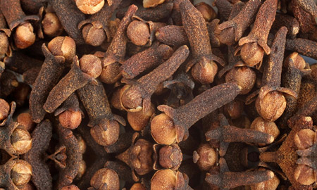
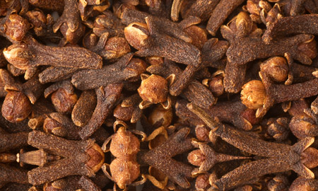
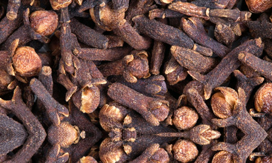
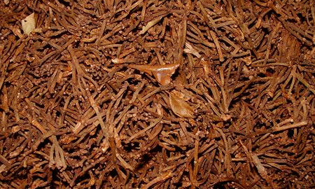

Export · Specialty Commodity
Madagascar Cloves
We are one of the leading exporters of premium Madagascar cloves. Available in four grades — from hand-picked superior CG1 to stems — all sourced from fresh latest crop in Madagascar, Tanzania, and Comoros.

Product Range
Available Grades
Mada Overseas is the leading exporter and supplier of Cloves — minimum 500 MT ready stock at all times. Supplying Madagascar whole cloves all year round to worldwide destinations.

CG-1 — Hand Picked Superior Quality
The very finest cloves — hand-picked, selected for size and perfection, free from impurity
- QualitySuperior
- VarietyHand Picked & Sorted at Microscopic Level
- HarvestFresh Latest Crop
- ColorReddish Brown
- Moisture<10%
- Stems1% Max
- Baby Cloves1% Max
- Headless Cloves1% Max
- Odd Matters0%
- Metallic ContentNil
- Packaging50kg Jute Bags / 25kg or 15kg Carton Boxes
- SmellSpicy Strong & Special Clove Odour — No Damped Smell

CG-2 — Clean Quality
Second finest grade — less than 0.5% admixture, very marginal impurity level
- QualityClean
- VarietyWell Dried & Clean
- HarvestFresh Latest Crop
- ColorReddish Brown
- Moisture<11%
- Stems2–4%
- Baby Cloves2% Max
- Headless Cloves2% Max
- Odd Matters0%
- Metallic ContentNil
- Packaging50kg Jute Bags / 25kg or 15kg Carton Boxes
- SmellSpicy Strong & Special Clove Odour — No Damped Smell

CG-3 — Standard Quality
Well dried and clean standard grade
- QualityStandard
- VarietyWell Dried and Clean
- HarvestFresh Latest Crop
- ColorReddish Brown
- Moisture<12%
- Stems3–5%
- Baby Cloves2% Max
- Headless Cloves3% Max
- Odd Matters0%
- Metallic ContentNil
- Packaging50kg Jute Bags / 25kg or 15kg Carton Boxes
- SmellSpicy Strong & Special Clove Odour — No Damped Smell

Stems With Oil
Well dried clove stems, standard quality
- QualityStandard
- VarietyWell Dried and Clean
- HarvestFresh Latest Crop
- ColorReddish Brown
- Moisture<12%
- Packaging30kg Jute Bags
- SmellSpicy Strong & Special Clove Odour — No Damped Smell
Origin
Madagascar · Tanzania · Comoros · Indonesia (Stems)
Interested in our Cloves?
Submit an enquiry with your required grade, quantity, and destination port.